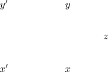
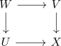
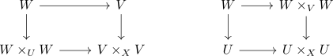
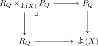
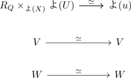
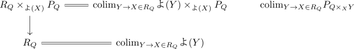
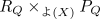
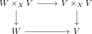
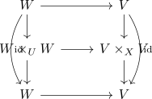

Voevodskys descent criterion
Proposition
Let $\mathcal{C}$ be a category and $\sigma$ a collection of squares such that:
- all squares in $\sigma$ are pullbacks
- $\sigma$ is stable under pullbacks, that is for any square and

pullback along a corner.
- for all $Q$ in $\sigma$

$U \rightarrow X$ and $V \rightarrow X$ are truncated
- the diagonal squares

are contained Let $\tau$ be the grothenideck topology generated by $\sigma$ (i.e. coverings are generated by leg inclusions).
Then a preshaef on $\mathcal{C}$ is a $\tau$ shaef if and only if it sends the squares in $\sigma$ to cartesian squares.
Proof
For a square $Q$

let $P_{Q} = よ(U) \coprod_{よ(W)} よ(V) \rightarrow よ(X)$ and $R_{Q}$ the sieve on $X$ generated by $U,V$. Let $S = \{P_{Q} \rightarrow よ(X) \vert Q \in \sigma\}$ and $T = \{R_{Q} \rightarrow よ(X) \vert Q \in \sigma\}$, where $T \subseteq \tau$ is a (in general strict) subcollection..
Let $P_{\sigma}(\mathcal{C}) = \{\mathcal{F} \in \mathcal{P}(\mathcal{C}) \vert \mathcal{F}(Q) \textrm{ is cartesian for all } Q \in \sigma\}$, where $P_{\sigma}(Q) = \mathcal{L}_{S}(\mathcal{P}(\mathcal{C}))$ are the \(S\)-local objects.
We want to show that $\mathrm{Shv}_{\tau}(\mathcal{C}) = \mathcal{L}_{T}(\mathcal{P}(\mathcal{C})$. Let $\overline{S} = \mathcal{L}_{S}^{-1}(\textrm{ equivalences})$ and $\overline{T} = \mathcal{L}_{T}^{-1}(\textrm{ equivalences})$, i.e. the morphisms get inverted by the localizaitons.
We need to show that $\overline{T} = \overline{S}$. Here it suffices to show that $S \subseteq \overline{T}$ and $\overline{T} \subseteq S$.
Let $Q \in \sigma$, then consider

In particular, the map $R_{Q} \times_{よ(X)} P_{Q} \rightarrow P_{Q}$ is the pushout of

This implies that the map $R_{Q} \times_{よ(X)} P_{Q} \rightarrow P_{Q}$ is an equivalence.
Now we can write

where $P_{Q \tiems_{X} Y}$ lies in $2)$. Hence $\mathrm{colim}_{Y \rightarrow X \in R_{Q}} P_{Q \times_{X} Y} \rightarrow \mathrm{colim}_{Y \rightarrow X \in R_{Q}} よ(Y)$ lies in $\overline{S}$ as it a colimit of maps of $S$.
Hence in the square
a two out of three argument shows $T \subseteq \overline{S}$.
other $S \subseteq \overline{T}$.
Let $R_{Q} \times_{よ(X)} P_{Q} \rightarrow R_{Q}$ in $S$ Then we need to show that this map lies in $\overline{T}$.
Here $R_{Q}$ is a colimit of $P_{Q} \rightarrow よ(X)$.

Let $Q$ be
i.e. $\mathcal{L}_{\tau}(Q)$ is a pushout in $\mathrm{Sh}_{\tau}(\mathcal{C})$.
Since $U,V$ cover $X$, it suffices to show that $Q \times_{X} U$ and $Q \times_{X} V$ become pushout sin $\mathrm{Shv}_{\tau}(\mathcal{C})$. We prove $Q \times_{X} U$: We argue by induction on $n$, $V \rightarrow X$ is n-truncated (see axiom 3). So consider the base change along $X \rightarrow V$.

which uses (1) in writing $W \simeq U \times_{X} V$ as pullabck of $Q$. Moreover, we can write $W \times_{X} V \simeq W \times_{U} W$ by pasting lemma.
Hence

where $Q_{\Delta}$ lies in $\tau$ by 4). Now $\Delta$ is $n-1$ truncated, so $Q_{\Delta}$ is a pushout in $\mathrm{Shv}_{\Delta}$ by induction hypothesis.
Now both the outer and top square are pushouts in $\mathrm{Shv}_{\tau}(\mathcal{C})$, hence so is the bottom square.
claim
We claim
where$T = \{R_{Q} \hookrightarrow よ(X), Q \in \tau\}$ and $\tau$ is the grothendieck topology generated by $T$